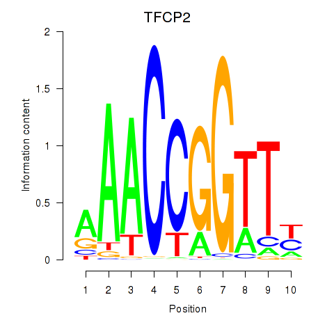

Motif ID: TFCP2
Z-value: 0.791
Transcription factors associated with TFCP2:
| Gene Symbol | Entrez ID | Gene Name |
|---|---|---|
| TFCP2 | ENSG00000135457.5 | TFCP2 |
![](http://string-db.org/api/image/network?network_flavor=evidence&limit=0&species=9606&caller_identity=MARA&identifiers=9606.ENSP00000360998%0D9606.ENSP00000255499%0D9606.ENSP00000220592%0D9606.ENSP00000260056%0D9606.ENSP00000388846%0D9606.ENSP00000332162%0D9606.ENSP00000265023%0D9606.ENSP00000451003%0D9606.ENSP00000312385%0D9606.ENSP00000469388%0D9606.ENSP00000260264%0D9606.ENSP00000254066%0D9606.ENSP00000270458%0D9606.ENSP00000261514%0D9606.ENSP00000317912%0D9606.ENSP00000384665%0D9606.ENSP00000427015%0D9606.ENSP00000369018%0D9606.ENSP00000335029%0D9606.ENSP00000302640%0D9606.ENSP00000376317%0D9606.ENSP00000429473%0D9606.ENSP00000287878%0D9606.ENSP00000317382%0D9606.ENSP00000451030%0D9606.ENSP00000362195%0D9606.ENSP00000217961%0D9606.ENSP00000237612%0D9606.ENSP00000262102%0D9606.ENSP00000344547%0D9606.ENSP00000311427%0D9606.ENSP00000361616%0D9606.ENSP00000392411%0D9606.ENSP00000360671%0D9606.ENSP00000381412%0D9606.ENSP00000253408%0D9606.ENSP00000332646%0D9606.ENSP00000358857%0D9606.ENSP00000252729%0D9606.ENSP00000359596%0D9606.ENSP00000376268%0D9606.ENSP00000351883%0D9606.ENSP00000312143%0D9606.ENSP00000398619%0D9606.ENSP00000365692%0D9606.ENSP00000058691%0D9606.ENSP00000391879%0D9606.ENSP00000261396%0D9606.ENSP00000314042%0D9606.ENSP00000269703%0D9606.ENSP00000296464%0D9606.ENSP00000309689%0D9606.ENSP00000428657%0D9606.ENSP00000227495%0D9606.ENSP00000286621%0D9606.ENSP00000358763%0D9606.ENSP00000337838%0D9606.ENSP00000300404%0D9606.ENSP00000316959%0D9606.ENSP00000221978%0D9606.ENSP00000346536%0D9606.ENSP00000265371%0D9606.ENSP00000316527%0D9606.ENSP00000349654%0D9606.ENSP00000333547%0D9606.ENSP00000364943%0D9606.ENSP00000430236%0D9606.ENSP00000300098%0D9606.ENSP00000319781%0D9606.ENSP00000300557%0D9606.ENSP00000282611%0D9606.ENSP00000304713%0D9606.ENSP00000471750%0D9606.ENSP00000305766%0D9606.ENSP00000238558%0D9606.ENSP00000383145%0D9606.ENSP00000264605%0D9606.ENSP00000330060%0D9606.ENSP00000383719%0D9606.ENSP00000262370%0D9606.ENSP00000266095%0D9606.ENSP00000340683%0D9606.ENSP00000357706%0D9606.ENSP00000438378%0D9606.ENSP00000261862%0D9606.ENSP00000290431%0D9606.ENSP00000310015%0D9606.ENSP00000332198%0D9606.ENSP00000365362%0D9606.ENSP00000356832%0D9606.ENSP00000370125%0D9606.ENSP00000428619%0D9606.ENSP00000329040%0D9606.ENSP00000378364%0D9606.ENSP00000425840%0D9606.ENSP00000377298%0D9606.ENSP00000328181%0D9606.ENSP00000359551%0D9606.ENSP00000337862%0D9606.ENSP00000362460%0D9606.ENSP00000368135%0D9606.ENSP00000234142)
{kind=link}
{kind=link}
{kind=link}
{kind=link}
{kind=link}
Top targets:
Gene overrepresentation in biological_process category:
| Log-likelihood per target | Total log-likelihood | Term | Description |
|---|---|---|---|
| 0.1 | 1.0 | GO:0060300 | regulation of cytokine activity(GO:0060300) |
| 0.1 | 0.5 | GO:0015853 | adenine transport(GO:0015853) |
| 0.1 | 1.2 | GO:0048251 | elastic fiber assembly(GO:0048251) |
| 0.1 | 0.3 | GO:0060721 | spongiotrophoblast cell proliferation(GO:0060720) regulation of spongiotrophoblast cell proliferation(GO:0060721) cell proliferation involved in embryonic placenta development(GO:0060722) regulation of cell proliferation involved in embryonic placenta development(GO:0060723) |
| 0.1 | 0.4 | GO:1901994 | negative regulation of meiotic cell cycle phase transition(GO:1901994) |
| 0.1 | 0.9 | GO:1904352 | positive regulation of protein catabolic process in the vacuole(GO:1904352) |
| 0.1 | 0.2 | GO:0000454 | snoRNA guided rRNA pseudouridine synthesis(GO:0000454) |
| 0.1 | 0.2 | GO:0014034 | neural crest cell fate commitment(GO:0014034) |
| 0.1 | 0.4 | GO:0048388 | endosomal lumen acidification(GO:0048388) |
| 0.1 | 0.6 | GO:0032888 | regulation of spindle elongation(GO:0032887) regulation of mitotic spindle elongation(GO:0032888) anastral spindle assembly(GO:0055048) protein localization to spindle pole body(GO:0071988) regulation of protein localization to spindle pole body(GO:1902363) positive regulation of protein localization to spindle pole body(GO:1902365) positive regulation of mitotic spindle elongation(GO:1902846) |
| 0.1 | 0.8 | GO:0043951 | negative regulation of cAMP-mediated signaling(GO:0043951) |
| 0.1 | 0.2 | GO:0051664 | nuclear pore distribution(GO:0031081) nuclear pore localization(GO:0051664) |
| 0.1 | 0.2 | GO:0044209 | AMP salvage(GO:0044209) |
| 0.0 | 0.8 | GO:0030050 | vesicle transport along actin filament(GO:0030050) |
| 0.0 | 0.3 | GO:0090625 | siRNA loading onto RISC involved in RNA interference(GO:0035087) mRNA cleavage involved in gene silencing by siRNA(GO:0090625) |
| 0.0 | 0.7 | GO:0042908 | xenobiotic transport(GO:0042908) |
| 0.0 | 0.1 | GO:0030186 | melatonin metabolic process(GO:0030186) melatonin biosynthetic process(GO:0030187) |
| 0.0 | 0.3 | GO:0015692 | lead ion transport(GO:0015692) |
| 0.0 | 0.1 | GO:0035606 | peptidyl-cysteine S-trans-nitrosylation(GO:0035606) |
| 0.0 | 0.7 | GO:0006527 | arginine catabolic process(GO:0006527) |
| 0.0 | 0.4 | GO:0071787 | endoplasmic reticulum tubular network assembly(GO:0071787) |
| 0.0 | 0.2 | GO:0015015 | heparan sulfate proteoglycan biosynthetic process, enzymatic modification(GO:0015015) |
| 0.0 | 0.5 | GO:0006030 | chitin metabolic process(GO:0006030) chitin catabolic process(GO:0006032) |
| 0.0 | 0.3 | GO:0015808 | L-alanine transport(GO:0015808) |
| 0.0 | 0.3 | GO:0010940 | positive regulation of necrotic cell death(GO:0010940) |
| 0.0 | 0.1 | GO:0060010 | Sertoli cell fate commitment(GO:0060010) |
| 0.0 | 0.1 | GO:0060392 | negative regulation of SMAD protein import into nucleus(GO:0060392) |
| 0.0 | 0.1 | GO:0035188 | blastocyst hatching(GO:0001835) hatching(GO:0035188) organism emergence from protective structure(GO:0071684) |
| 0.0 | 0.1 | GO:0033364 | mast cell secretory granule organization(GO:0033364) |
| 0.0 | 0.3 | GO:1902659 | regulation of glucose mediated signaling pathway(GO:1902659) |
| 0.0 | 0.1 | GO:2000820 | negative regulation of transcription from RNA polymerase II promoter involved in smooth muscle cell differentiation(GO:2000820) |
| 0.0 | 0.6 | GO:1990001 | inhibition of cysteine-type endopeptidase activity involved in apoptotic process(GO:1990001) |
| 0.0 | 0.2 | GO:0000056 | ribosomal small subunit export from nucleus(GO:0000056) |
| 0.0 | 0.5 | GO:1902187 | negative regulation of viral release from host cell(GO:1902187) |
| 0.0 | 0.8 | GO:0006706 | steroid catabolic process(GO:0006706) |
| 0.0 | 0.2 | GO:0019276 | UDP-N-acetylgalactosamine metabolic process(GO:0019276) |
| 0.0 | 0.1 | GO:1990502 | dense core granule maturation(GO:1990502) |
| 0.0 | 0.1 | GO:0002290 | gamma-delta T cell activation involved in immune response(GO:0002290) negative regulation of interferon-beta secretion(GO:0035548) regulation of gamma-delta T cell activation involved in immune response(GO:2001191) positive regulation of gamma-delta T cell activation involved in immune response(GO:2001193) |
| 0.0 | 0.1 | GO:0021648 | vestibulocochlear nerve morphogenesis(GO:0021648) vestibulocochlear nerve formation(GO:0021650) |
| 0.0 | 0.4 | GO:0043922 | negative regulation by host of viral transcription(GO:0043922) |
| 0.0 | 0.1 | GO:0036486 | trunk segmentation(GO:0035290) trunk neural crest cell migration(GO:0036484) ventral trunk neural crest cell migration(GO:0036486) |
| 0.0 | 0.1 | GO:0010273 | detoxification of copper ion(GO:0010273) stress response to copper ion(GO:1990169) |
| 0.0 | 0.2 | GO:0019344 | cysteine biosynthetic process(GO:0019344) |
| 0.0 | 0.2 | GO:0070294 | renal sodium ion absorption(GO:0070294) |
| 0.0 | 0.1 | GO:2000639 | regulation of SREBP signaling pathway(GO:2000638) negative regulation of SREBP signaling pathway(GO:2000639) |
| 0.0 | 0.1 | GO:0051563 | astrocyte activation involved in immune response(GO:0002265) smooth endoplasmic reticulum calcium ion homeostasis(GO:0051563) |
| 0.0 | 0.2 | GO:0001778 | plasma membrane repair(GO:0001778) |
| 0.0 | 0.5 | GO:0048240 | sperm capacitation(GO:0048240) |
| 0.0 | 1.0 | GO:0050982 | detection of mechanical stimulus(GO:0050982) |
| 0.0 | 0.1 | GO:0060406 | positive regulation of penile erection(GO:0060406) |
| 0.0 | 0.3 | GO:0038166 | angiotensin-activated signaling pathway(GO:0038166) |
| 0.0 | 0.1 | GO:0046671 | negative regulation of cellular pH reduction(GO:0032848) CD8-positive, alpha-beta T cell lineage commitment(GO:0043375) negative regulation of retinal cell programmed cell death(GO:0046671) |
| 0.0 | 0.1 | GO:0009253 | peptidoglycan metabolic process(GO:0000270) peptidoglycan catabolic process(GO:0009253) |
| 0.0 | 0.1 | GO:1904885 | beta-catenin destruction complex assembly(GO:1904885) |
| 0.0 | 0.1 | GO:0036089 | cleavage furrow formation(GO:0036089) |
| 0.0 | 0.1 | GO:0001661 | conditioned taste aversion(GO:0001661) |
| 0.0 | 0.2 | GO:1904714 | regulation of chaperone-mediated autophagy(GO:1904714) |
| 0.0 | 0.1 | GO:0045054 | constitutive secretory pathway(GO:0045054) |
| 0.0 | 0.3 | GO:0006853 | carnitine shuttle(GO:0006853) |
| 0.0 | 0.1 | GO:2000312 | regulation of kainate selective glutamate receptor activity(GO:2000312) |
Gene overrepresentation in cellular_component category:
| Log-likelihood per target | Total log-likelihood | Term | Description |
|---|---|---|---|
| 0.1 | 0.5 | GO:0071817 | MMXD complex(GO:0071817) |
| 0.1 | 0.6 | GO:0055028 | cortical microtubule(GO:0055028) |
| 0.1 | 0.6 | GO:0097443 | sorting endosome(GO:0097443) |
| 0.0 | 1.2 | GO:0043205 | microfibril(GO:0001527) fibril(GO:0043205) |
| 0.0 | 0.4 | GO:0036128 | CatSper complex(GO:0036128) |
| 0.0 | 0.3 | GO:0070826 | paraferritin complex(GO:0070826) |
| 0.0 | 0.2 | GO:0072589 | box H/ACA scaRNP complex(GO:0072589) box H/ACA telomerase RNP complex(GO:0090661) |
| 0.0 | 0.3 | GO:0035068 | micro-ribonucleoprotein complex(GO:0035068) |
| 0.0 | 0.1 | GO:0070762 | nuclear pore transmembrane ring(GO:0070762) |
| 0.0 | 0.1 | GO:0097135 | cyclin E2-CDK2 complex(GO:0097135) |
| 0.0 | 0.1 | GO:0043159 | acrosomal matrix(GO:0043159) |
| 0.0 | 0.1 | GO:0097059 | CRLF-CLCF1 complex(GO:0097058) CNTFR-CLCF1 complex(GO:0097059) |
| 0.0 | 0.0 | GO:0001534 | radial spoke(GO:0001534) |
| 0.0 | 0.1 | GO:0033186 | CAF-1 complex(GO:0033186) |
| 0.0 | 0.2 | GO:0070765 | gamma-secretase complex(GO:0070765) |
| 0.0 | 0.5 | GO:0071782 | endoplasmic reticulum tubular network(GO:0071782) |
| 0.0 | 0.1 | GO:0036156 | inner dynein arm(GO:0036156) |
| 0.0 | 0.1 | GO:0035976 | AP1 complex(GO:0035976) |
| 0.0 | 0.2 | GO:0000940 | condensed chromosome outer kinetochore(GO:0000940) |
| 0.0 | 0.3 | GO:0031588 | nucleotide-activated protein kinase complex(GO:0031588) |
| 0.0 | 0.1 | GO:1990452 | Parkin-FBXW7-Cul1 ubiquitin ligase complex(GO:1990452) |
Gene overrepresentation in molecular_function category:
| Log-likelihood per target | Total log-likelihood | Term | Description |
|---|---|---|---|
| 0.2 | 0.5 | GO:0005471 | ATP:ADP antiporter activity(GO:0005471) adenine transmembrane transporter activity(GO:0015207) |
| 0.1 | 0.7 | GO:0016403 | dimethylargininase activity(GO:0016403) |
| 0.1 | 0.3 | GO:0098808 | mRNA cap binding(GO:0098808) |
| 0.1 | 0.3 | GO:0015173 | aromatic amino acid transmembrane transporter activity(GO:0015173) |
| 0.1 | 0.7 | GO:0008559 | xenobiotic-transporting ATPase activity(GO:0008559) |
| 0.1 | 0.3 | GO:0072320 | volume-sensitive chloride channel activity(GO:0072320) |
| 0.1 | 0.2 | GO:0015361 | low-affinity sodium:dicarboxylate symporter activity(GO:0015361) |
| 0.0 | 0.2 | GO:0017095 | heparan sulfate 6-O-sulfotransferase activity(GO:0017095) |
| 0.0 | 0.2 | GO:0000026 | alpha-1,2-mannosyltransferase activity(GO:0000026) |
| 0.0 | 0.6 | GO:0038085 | vascular endothelial growth factor binding(GO:0038085) |
| 0.0 | 0.3 | GO:0001165 | RNA polymerase I upstream control element sequence-specific DNA binding(GO:0001165) |
| 0.0 | 0.3 | GO:0015086 | cadmium ion transmembrane transporter activity(GO:0015086) cobalt ion transmembrane transporter activity(GO:0015087) lead ion transmembrane transporter activity(GO:0015094) ferrous iron uptake transmembrane transporter activity(GO:0015639) |
| 0.0 | 0.4 | GO:0070915 | lysophosphatidic acid receptor activity(GO:0070915) |
| 0.0 | 0.2 | GO:0047288 | monosialoganglioside sialyltransferase activity(GO:0047288) |
| 0.0 | 0.1 | GO:0061769 | ribosylnicotinamide kinase activity(GO:0050262) ribosylnicotinate kinase activity(GO:0061769) |
| 0.0 | 0.5 | GO:0004568 | chitinase activity(GO:0004568) |
| 0.0 | 0.6 | GO:0051011 | microtubule minus-end binding(GO:0051011) |
| 0.0 | 0.1 | GO:0051916 | granulocyte colony-stimulating factor binding(GO:0051916) |
| 0.0 | 1.0 | GO:0008171 | O-methyltransferase activity(GO:0008171) |
| 0.0 | 0.1 | GO:0000384 | first spliceosomal transesterification activity(GO:0000384) |
| 0.0 | 0.3 | GO:0008607 | phosphorylase kinase regulator activity(GO:0008607) |
| 0.0 | 0.1 | GO:0035939 | microsatellite binding(GO:0035939) |
| 0.0 | 0.1 | GO:0017159 | pantetheine hydrolase activity(GO:0017159) |
| 0.0 | 0.1 | GO:0044378 | non-sequence-specific DNA binding, bending(GO:0044378) |
| 0.0 | 0.1 | GO:0039552 | RIG-I binding(GO:0039552) |
| 0.0 | 0.2 | GO:0034513 | box H/ACA snoRNA binding(GO:0034513) |
| 0.0 | 0.1 | GO:0008269 | JAK pathway signal transduction adaptor activity(GO:0008269) |
| 0.0 | 0.1 | GO:0004766 | spermidine synthase activity(GO:0004766) |
| 0.0 | 0.1 | GO:0030107 | HLA-A specific inhibitory MHC class I receptor activity(GO:0030107) |
| 0.0 | 0.1 | GO:0004609 | phosphatidylserine decarboxylase activity(GO:0004609) |
| 0.0 | 0.1 | GO:0035662 | Toll-like receptor 4 binding(GO:0035662) |
| 0.0 | 0.1 | GO:0031685 | adenosine receptor binding(GO:0031685) |
| 0.0 | 0.0 | GO:0034353 | RNA pyrophosphohydrolase activity(GO:0034353) |
| 0.0 | 0.1 | GO:0033754 | indoleamine 2,3-dioxygenase activity(GO:0033754) |
| 0.0 | 0.3 | GO:0004865 | protein serine/threonine phosphatase inhibitor activity(GO:0004865) |
| 0.0 | 0.1 | GO:0044323 | retinoic acid-responsive element binding(GO:0044323) |
| 0.0 | 0.1 | GO:0042500 | aspartic endopeptidase activity, intramembrane cleaving(GO:0042500) |
| 0.0 | 0.1 | GO:0004040 | amidase activity(GO:0004040) |
| 0.0 | 0.3 | GO:0009931 | calcium-dependent protein serine/threonine kinase activity(GO:0009931) |
| 0.0 | 0.3 | GO:0008349 | MAP kinase kinase kinase kinase activity(GO:0008349) |
| 0.0 | 0.1 | GO:0042296 | ISG15 transferase activity(GO:0042296) |
| 0.0 | 0.1 | GO:0017060 | 3-galactosyl-N-acetylglucosaminide 4-alpha-L-fucosyltransferase activity(GO:0017060) |
| 0.0 | 1.1 | GO:0004712 | protein serine/threonine/tyrosine kinase activity(GO:0004712) |
| 0.0 | 0.0 | GO:0004947 | bradykinin receptor activity(GO:0004947) |
| 0.0 | 0.1 | GO:0000340 | RNA 7-methylguanosine cap binding(GO:0000340) |
| 0.0 | 0.7 | GO:0005245 | voltage-gated calcium channel activity(GO:0005245) |
| 0.0 | 0.1 | GO:0019534 | toxin transporter activity(GO:0019534) |
Gene overrepresentation in C2:CP category:
| Log-likelihood per target | Total log-likelihood | Term | Description |
|---|---|---|---|
| 0.0 | 0.6 | PID_VEGF_VEGFR_PATHWAY | VEGF and VEGFR signaling network |
| 0.0 | 1.1 | PID_HIF2PATHWAY | HIF-2-alpha transcription factor network |
| 0.0 | 1.0 | ST_ERK1_ERK2_MAPK_PATHWAY | ERK1/ERK2 MAPK Pathway |
Gene overrepresentation in C2:CP:REACTOME category:
| Log-likelihood per target | Total log-likelihood | Term | Description |
|---|---|---|---|
| 0.0 | 0.9 | REACTOME_ABACAVIR_TRANSPORT_AND_METABOLISM | Genes involved in Abacavir transport and metabolism |
| 0.0 | 0.8 | REACTOME_THE_ACTIVATION_OF_ARYLSULFATASES | Genes involved in The activation of arylsulfatases |
| 0.0 | 0.1 | REACTOME_NEP_NS2_INTERACTS_WITH_THE_CELLULAR_EXPORT_MACHINERY | Genes involved in NEP/NS2 Interacts with the Cellular Export Machinery |
| 0.0 | 0.6 | REACTOME_RECRUITMENT_OF_NUMA_TO_MITOTIC_CENTROSOMES | Genes involved in Recruitment of NuMA to mitotic centrosomes |
| 0.0 | 0.6 | REACTOME_SEMA3A_PLEXIN_REPULSION_SIGNALING_BY_INHIBITING_INTEGRIN_ADHESION | Genes involved in SEMA3A-Plexin repulsion signaling by inhibiting Integrin adhesion |
| 0.0 | 1.1 | REACTOME_CREB_PHOSPHORYLATION_THROUGH_THE_ACTIVATION_OF_RAS | Genes involved in CREB phosphorylation through the activation of Ras |
| 0.0 | 0.7 | REACTOME_INTERACTIONS_OF_VPR_WITH_HOST_CELLULAR_PROTEINS | Genes involved in Interactions of Vpr with host cellular proteins |
| 0.0 | 0.3 | REACTOME_REGULATION_OF_RHEB_GTPASE_ACTIVITY_BY_AMPK | Genes involved in Regulation of Rheb GTPase activity by AMPK |